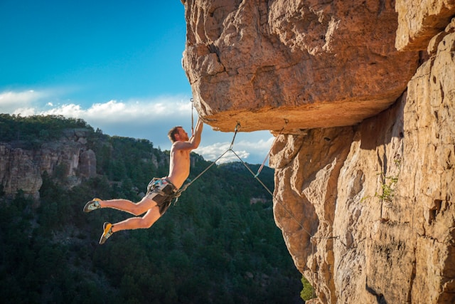
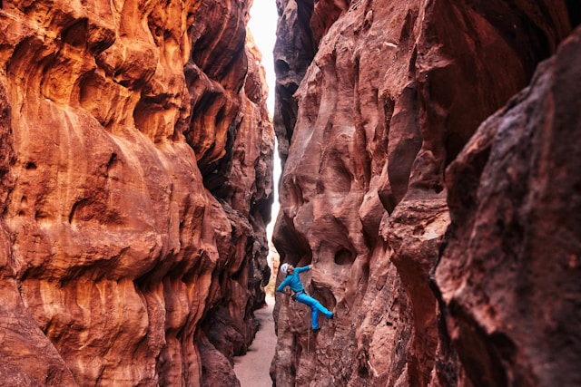

Klättring
Det här är en sida för dig som är nyfiken på klättring eller redan älskar sporten. Här samlar vi information om olika typer av klättring, utrustning, platser och event. Målet är att göra det enklare att komma igång och att inspirera fler att upptäcka klättring.
Vad är klättring?
Klättring är en sport där du tar dig upp för väggar eller klippor med hjälp av styrka, teknik och balans. Det finns flera olika typer av klättring, till exempel bouldering, sportklättring och tradklättring.
En sport för alla
Klättring passar både barn och vuxna, nybörjare och erfarna. Du behöver inte vara superstark – teknik, balans och problemlösning är minst lika viktiga delar. Många uppskattar också gemenskapen som finns inom klättring, både inomhus i klätterhallar och utomhus i naturen.
Olika typer av klättring
Det finns flera sätt att klättra på, och varje stil har sin egen känsla:
Bouldering är kortare klättring utan rep där du fokuserar på teknik och styrka.
Sportklättring innebär att du klättrar med rep och säkring längs en förutbestämd led.
Tradklättring ger mer frihet och äventyr där du själv placerar din säkerhetsutrustning.
Därför ska du börja klättra
Klättring är inte bara träning – det är också ett sätt att utmana sig själv och utvecklas mentalt. Du lär dig lösa problem, hantera rädslor och bygga självförtroende. Dessutom är det en rolig och varierad aktivitet där ingen klättertur är den andra lik.
Kom igång
För att börja klättra behöver du inte mycket utrustning. Många klätterhallar hyr ut skor och sele. Det viktigaste är att börja lugnt, lära sig säkerhet och ha roligt.
Utforska sidan
På sidan Saker kan du läsa om utrustning och vad du behöver för att komma igång. Under Platser hittar du tips på klätterställen. På Event kan du se vad som händer och kanske hitta något att delta i.


